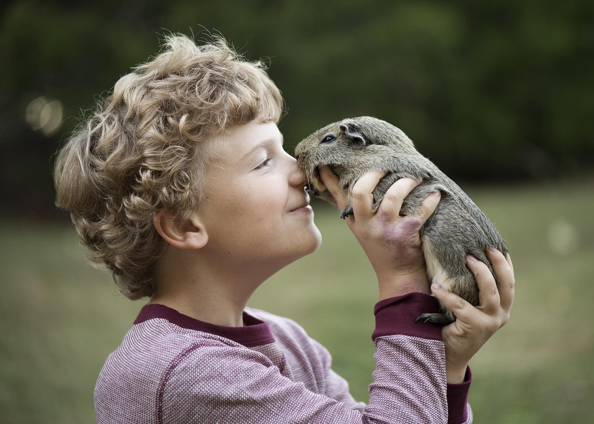
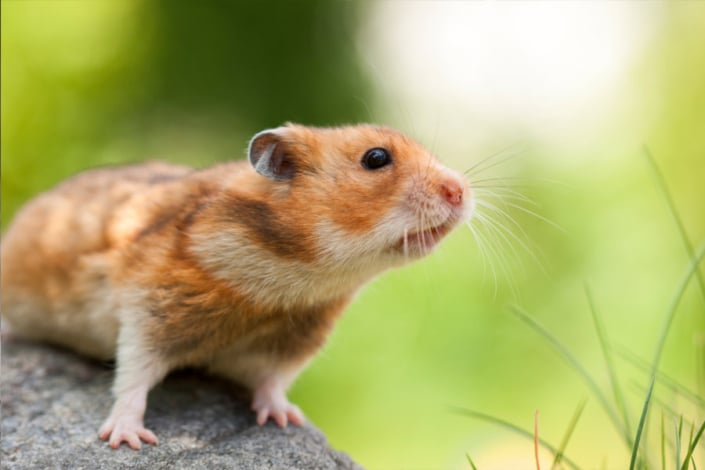
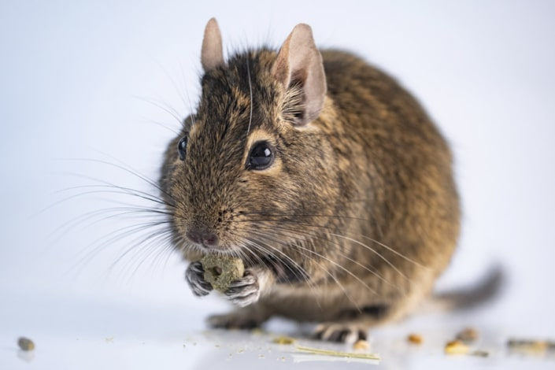
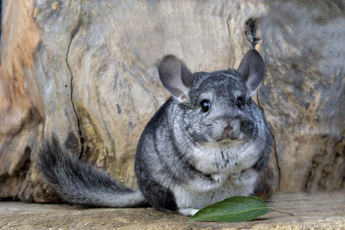
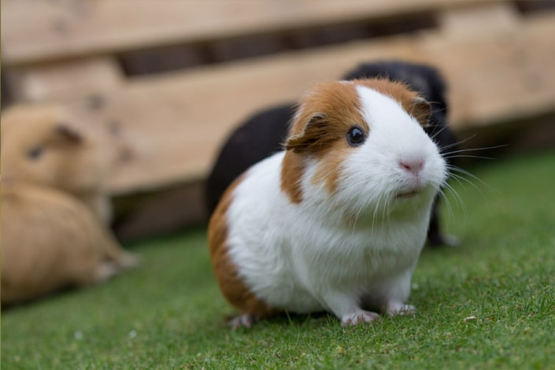
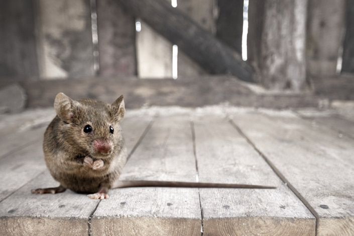

Roedores domesticos
Los roedores suelen pasar desapercibidos entre otras opciones de mascotas pese a que algunas especies son, incluso, ex ticas. Sin embargo, un roedor es la mascota perfecta para ni os y principiantes por su reducido tama o y, en su mayor a, por sus f ciles cuidados. Estos animales de compa a son sorprendentemente inteligentes y cari osos, no requieren mucho espacio, no hacen mucho ruido ni suelen necesitar cuidados especiales. As que adoptar un roedor es la opci n adecuada para aquellos que quieren salirse del eterno debate entre perros y gatos, pero hay que saber qu roedores son mejores como mascotas y decidir en funci n de cada caso. Vamos a verlos y a conocer sus caracter sticas.
Hamster
El rey de los roedores como mascota, el m s habitual. Su reducido tama o, unos 12cm de largo, y sus f ciles cuidados lo abalan, pero precisamente por eso hay que tener cuidado al tratarlos y cogerlos, adem s de lo delicados, les gusta pellizcar.
Necesitan comida especial para ellos, vegetales, agua y una jaula limpia. Por otro lado, es importante proporcionarles ruedas de ejercicios y t neles para estar activos, y juguetes masticables para mantener su dentadura en buena forma. Otras caracter sticas del h mster son que por la noche es cuando est n activos y que cada cierto tiempo entran en estado de hibernaci n por 5 7 d as. La mayor a de los h mster prefieren vivir solos que con otros de su especie, y ojo con juntar a varios ejemplares, se reproducen con gran facilidad. Viven de 2 a 3 a os.
Gegu
Los deg s son los grandes desconocidos entre las opciones de qu roedores son mejores como mascota. Sin embargo, son muy cari osos, sociables, activos y f ciles de cuidar, pero necesitan un espacio grande en el que moverse.
Como curiosidad, la mayor a de los roedores son nocturnos sin embargo el deg no lo es. Los deg pueden vivir hasta 8 o 9 a os y se reproducen muy r pidamente.
Chinchilla
Tan suaves (o m s) como el algod n, las chinchillas son muy tranquilas y cari osas. De hecho, suelen desarrollar una entra able relaci n con sus cuidadores. Los cuidados son similares a los del h mster. Su media de vida est en los 10 a os, pero hay algunos ejemplares que superan los 20 a os.
Se dice que es el animal m s suave del mundo, esto es porque cuentan con much sima cantidad, cada uno de sus fol culos contiene m s 50 pelos (nosotros solo uno). Las chinchillas se ba an en arena, y a ellas les encanta. Nunca deber s meterla en agua.
Cobaya
Tambi n conocidas como conejillos de Indias, las cobayas son los roedores dom sticos m s grandes y regordetes (aproximadamente 1 kilo los adultos), con orejas redondeadas y hocico chato y en general pelo largo (aunque depende de la raza).
Su comportamiento es tranquilo y afable, no suelen morder, por lo que son aptas incluso para ser cuidadas por ni os peque os. No obstante, tambi n les gusta la actividad y tener espacio para hacer su gracioso salto para caminar. Su media de vida es de 5 a 8 a os. Existe el debate de si a estos animales ha de considerarlos roedores.
Raton
Uno de los roedores m s peque os ( pueden llegar a medir tan solo 9 cm) y f ciles de cuidar. Tienen una amplia gama de colores en su pelaje. Los ratones son roedores muy activos y entretenidos, pero al principio desconf an, no son especialmente receptivos al contacto. Con el paso de las semanas los ratones se habit an a sus due os y se vuelven m s cercanos. Como la mayor a, necesitan juegos para entretenerse por la noche, ruedas y juguetes masticables. Viven 1-2 a os.
Caracter sticas y car cter de los roedores
- Inteligentes. Los roedores son animales de compa a tan inteligentes que admiten diferentes entrenamientos para adquirir nuevas cualidades. De hecho, ese tipo de juegos les viene estupendamente para permanecer activos.
- Nerviosos. Esa necesidad de actividad, si no se solventa, puede derivar en nerviosismo. Por eso es importante proponerles desaf os y darles juegos, especialmente por la noche cuando son especies nocturnas.
- Sociables. Dependiendo de su especie y subespecie, los roedores suelen ser mascotas muy sociables que interact an mucho con sus due os. Por eso son tan adecuados para tratar con ni os.
- Grupales. En general, necesitan vivir con otros miembros de su especie. Sin embargo, conviene informarse detalladamente antes porque hay machos muy territoriales, cr an con una asombrosa rapidez, etc.
- Poco longevos. La mayor a de especies de roedores viven pocos a os, entre 2 y 4.
- Peque os. El tama o de los roedores es una de sus caracter sticas m s positivas porque a penas superan el tama o de una mano. Eso significa que son manejables y que no necesitan mucho espacio.
Cuidados y necesidades de los roedores
- La alimentaci n
- Espacio y actividad
- Tipo de Jaula
- La limpieza de los roedores
- Los accesorios
La alimentaci n de los roedores es herb vora, por lo que solo necesitan frutas, verduras y semillas. En general, lo m s aconsejable es alimentar a cada roedor con un pienso adaptado a su especie, pero conviene conocer qu tipos de frutas y verduras frescas puede consumir cada una y variar la dieta de vez en cuando. Necesitan tener agua fresca siempre disponible.
El espacio referido a la casa en la que van a vivir no tiene que ser muy grande. Los roedores m s grandes como los deg s o las cobayas necesitan salir de su jaula una vez al d a para dar un paseo, los m s peque os pueden hacerlo con m s cuidado para evitar accidentes.
La jaula es su casa y el tama o debe ser el adecuado para cada ejemplar o grupo de ejemplares. En general, no necesitan jaulas enormes, aunque cuanto m s espacio tengan es mejor. Algunos roedores como los deg s s necesitan unas jaulas grandes, de hecho, las hay con varios pisos para que puedan moverse y jugar.
Los roedores son mascotas bastante limpias que no necesitan grandes cuidados y no generan malos olores. Obviamente, lo ideal es limpiar superficialmente la jaula una vez al d a, pero las limpiezas profundas pueden espaciarse hasta 10 d as. Ojo con ba arlos, se lavan solos, aunque hay que consultar a un experto en roedores para conocer las necesidades de higiene de cada especie.
Adem s de un refugio para dormir, la jaula necesita una serie de complementos para que los roedores vivan felices. Al ser animales muy activos, se recomienda tener una rueda y alg n juguete para que quemen energ a. Tambi n necesitan mordedores para regular el crecimiento de los incisivos.